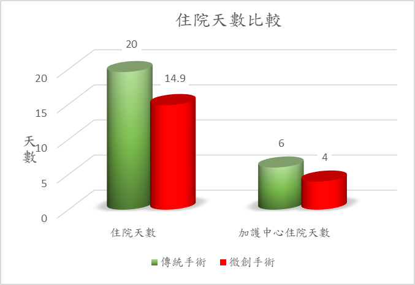
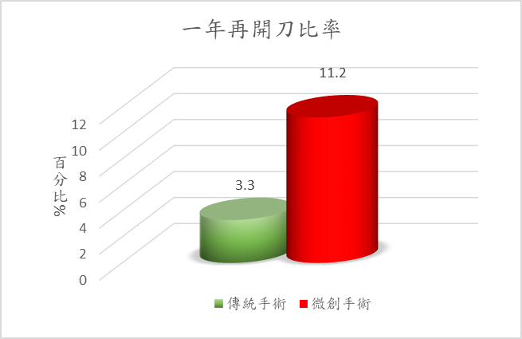
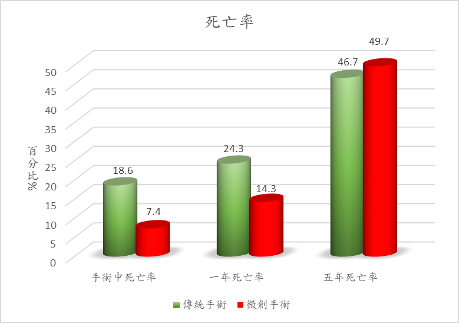
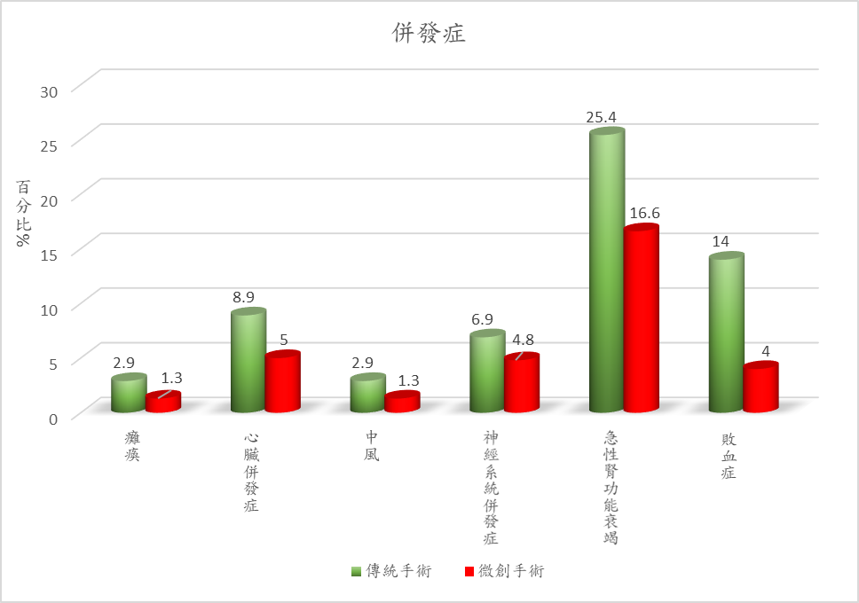

| 傳統手術 | 微創手術 | |
|---|---|---|
| 手術方式 | 左側開胸，手術過程需進行低溫體外循環，將剝離的胸主動脈病灶切除，以人工血管進行更換。 人工血管 |
將特殊導管經由病人兩側大腿動脈血管逆行輸送至降主動脈，經X光定位後，將金屬支架的人工血管，在膨大的血管前後架接一段管道讓血流通過，避免血流持續衝擊已膨大且變薄之動脈血管內壁造成破裂。 支架 |
| 傷口大小 | 手術採左側開胸，傷口長度大約20~22公分。 | 手術由腹股溝劃開，傷口長度約2~3公分，將特殊導管由此置入。若使用血管縫合器，則術後腹股溝穿刺傷口只有0.5公分。 |
| 費用 | 1.手術費用約73,000元。 2.可自費購買組織止血修復凝合劑(每劑4ml)用於手術傷口，一般傷口約需使用1~2支，每支單價25,000元，總價約50,000元。 |
1.手術費用約47,000元。 2.可自費購買血管縫合器縫合手術傷口，一般傷口約需3~4支，每支單價13,300元，總價約53,000元。 |
| 住院天數 |
病人平均住院天數為19.6天 住加護中心平均住院天數為6天 |
病人平均住院天數為14.9天 住加護中心平均住院天數為4天 |
 |
| 一年再開刀比率 | 傳統手術因為手術視野清楚，直接用人工血管取代病變血管，一年再開刀比率為3.3%。 | 微創手術因為滲漏及支架移位，一年再開刀比率為11.2%。 |  |
| 死亡率 |
1.傳統手術因為手術時間長，手術過程採低溫及暫時心臟停止，故有較高的死亡風險。 手術過程中死亡率為18.6% 一年死亡率為24.3% 五年死亡率為46.7% 2.經文獻評讀及統計原因後發現： 一年的死亡率雖然較高，但其五年的死亡率追蹤較微創手術稍低。 |
1.微創手術因為手術時間短，無須低溫及暫時心臟停止，故有較低死亡風險。 手術過程中死亡率為7.4% 一年死亡率為14.3% 五年死亡率為49.7% 2.經文獻評讀及統計原因後發現： 微創手術支架置入後，較易沿血管往上裂，形成甲型主動脈剝離，因此控制血壓、規則服藥、定期追蹤電腦斷層是很重要的。 |
 |
| 滲漏 | 無 | 1.手術後立即發生滲漏機會為7.2%。 2.五年後約25%病人發生滲漏情形。 |
| 併發症 | 手術以左側開胸，手術過程需全程或部分進行低溫體外循環，將剝離的胸主動脈病灶切除，手術時間較長，常見併發症為癱瘓(2.9%)、心臟併發症(8.9%)、中風(2.9%)、神經系統併發症(6.9%)、急性腎功能衰竭(25.4%)、敗血症(14%)。 | 手術由腹股溝劃開長度約2-3公分傷口，將導管置入進行手術，手術時間較短，常見併發症為癱瘓1.3%、心臟併發症5.0%、中風1.3%、神經系統併發症4.8%、急性腎功能衰竭16.6%、敗血症4%。 |  |
人工膝關節置換手術較能改善嚴重退化性膝關節炎造成的疼痛及關節功能
人工膝關節置換手術能夠百分之百改善退化性膝關節炎造成的疼痛
在接受人工膝關節置換手術後，我仍然需要配合醫師做復健運動
雖然統計上人工膝關節可以用上15年，但仍有可能需要再次手術
我已經確認好想要的治療方式，我決定選擇：（下列擇一）
我目前還無法決定